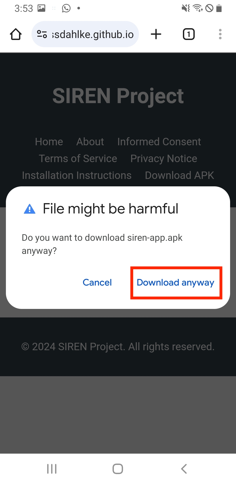
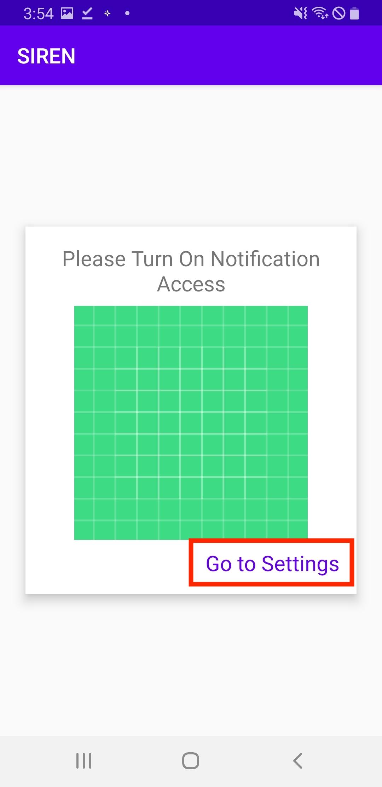
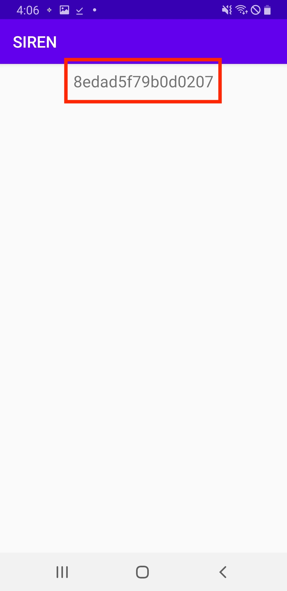

Installation Instructions
1. To begin the installation process, get out your Android device in which you have WhatsApp installed. Ensure the device is connected to the internet. Open the web browser on this device and navigate to the Stanford WhatsApp Study website at rossdahlke.github.io/siren. This is the official site where you'll find all the necessary information and download the study application. If you have not already, please read the Informed Consent, Terms of Service, Privacy Notice tabs.
2. After carefully reading the study information and considering your participation, click on the "Download APK" button highlighted in red at the bottom of the page. This will begin the process of downloading the Stanford WhatsApp Study application to your Android device.
3. On the Download APK page, you'll see a password field. Enter the password provided to you by the research team in the survey in this field. This security measure ensures that only authorized participants can access the application. After entering the password, click the "Submit" button to proceed with the download.

4. After entering the correct password, you'll see a "Download SIREN APK" button. Click on this button to start the download process. A pop-up window will appear asking if you want to download the file or open it. Select the "Download" option to save the APK file to your device. This step ensures that you have the SIREN application file on your Android device, ready for installation in the next steps.

5. Once the APK file has finished downloading, you'll need to locate it on your device. Open your device's file manager by tapping on the "My Files" app (highlighted in red). If you don't see this app immediately, you may need to search for it using the functionality on your personal device, as shown in the image where "files" is being searched. On most Android devices, this search bar can be accessed by "swiping down" on your device's homescreen. From there, search "files" or "myfiles" to locate your files folder.
6. In the "My Files" app, you should see the recently downloaded APK file in the "Recent files" section at the top of the screen. If you do not see the siren app file, you may need to search for the file. To search for the file, click on the magnifying glass icon in the top right corner of the screen. If you still don't see the file, you may need to look in the "Downloads" folder or "Installation files" category. Then, search "siren" for the application file to appear. Tap on this file to continue the installation process.

7. When you tap on the APK file, you may see a security warning stating that your phone is not allowed to install unknown apps from this source. This step is a standard Android security feature since you are downloading the application from the research team's website instead of the Google Play Store. To proceed with the installation, tap on the "Settings" button (highlighted in red). This will take you to a screen where you can allow installations from this source.

8. On the "Install unknown apps" screen, you'll see an option labeled "Allow from this source" next to the My Files app icon. Toggle this switch to the ON position (highlighted in red). This action allows your device to install apps from sources other than the Google Play Store, which is necessary for installing the SIREN app. Be aware that enabling this option comes with a security warning, but it's required for installing the study application.

9. After enabling the "Allow from this source" option, navigate back to the previous screen. You should now be able to proceed with the installation of the SIREN APK. Look for an "Install" button or option to continue with the app installation process. Remember, you're only allowing this for the purpose of installing the SIREN app for the Stanford WhatsApp Study, and you should be cautious about installing apps from unknown sources in general.

10. You will now see a prompt asking, "Do you want to install this application?" The app is labeled as "Notification Reader," which is the SIREN app for the Stanford WhatsApp Study. To proceed with the installation, tap the "Install" button highlighted in red. This will continue the process of installing the SIREN application on your device.

11. After initiating the installation, you may see a Google Play Protect warning. This is a security feature that notifies you when installing apps from outside the Google Play Store. The message indicates that Play Protect hasn't seen this app before and recommends a security scan. To proceed, tap the "Scan app" button highlighted in red. This will allow Google to perform a quick security check on the SIREN app before installation. This extra step helps ensure the safety of your device while installing the study application. We highly recommend that you do scan the application.
12. After initiating the scan, you'll see a "Scanning..." screen from Google Play Protect. This process may take a few moments to complete. The screen informs you that "Scanning the app may take a little while. You'll see results on this screen." Please be patient and allow the scan to finish. This step is important for ensuring the safety and integrity of the SIREN app before installation. If you change your mind during this process, you can select "Cancel and don't install," but you will not be participating in the study and will not receive compensation for installing the application.

13. After the Google Play Protect scan is complete, you'll see a message saying "This app looks safe" with a green checkmark next to the Notification Reader app icon. This indicates that the SIREN app has passed Google's security check. To proceed with the installation, tap the "Install" button highlighted in red. This will start the actual process of making the SIREN app accessible on your device.
14. The installation process for the Notification Reader (SIREN) app is now underway. You'll see a progress bar indicating the status of the installation. This may take a few moments to complete. Please be patient and allow the installation to finish. Do not navigate away from this screen or turn off your device during this process. If you need to cancel the installation for any reason, you can tap the "Cancel" button, but this will abort the installation and you'll need to start over if you want to participate in the study.

15. Once the installation is complete, you'll see a message saying "App installed." Next, click the "Open" button. This button will launch the SIREN app, allowing you to begin the setup process to ensure you device is properly configured to start participating in the study.
Upon opening the Notification Reader app, you'll see a screen requesting you to turn on Notification Access. This is a crucial step for the app to function properly and collect the necessary data for the study. To proceed, tap the "Go to Settings" button highlighted in red at the bottom of the screen. This will take you to your device's settings where you can grant the required permissions for the app to access your notifications.

17. In the Notification access settings screen, you'll see a list of apps that can access your notifications. Look for "SIREN" application in this list (highlighted in red). To grant the SIREN app permission to access your notifications, tap on the toggle switch next to "Notification Reader" to turn it on. This step is essential for the app to function properly and collect the necessary data for the Stanford WhatsApp Study.

18. After tapping the toggle switch, a permission dialog will appear explaining the capabilities of the Notification Reader app. It informs you that the app will be able to read all your notifications, including personal information such as contact names and message content. In this study, we are primarily collecting and analyzing the notification message content. This level of access is necessary for the SIREN app to collect the required data for participation in this study. Note: in this application we do not have the capability to turn on or off your Do not disturb nor settings related to it. We will not be affecting your Do not disturb settings in any way. To proceed with the study, tap the "Allow" button highlighted in red. Remember, granting this permission is essential for participating in the research project.

19. After granting permission, you'll be returned to the Notification access settings screen. You should now see that the toggle switch next to "Notification Reader" is turned on and highlighted in blue (as shown in the red box). This indicates that the SIREN app now has permission to access your notifications. With this step completed, the app is now properly configured to collect data for the study. You can now exit the settings and return to the Notification Reader app to complete the final step of the study setup process and to ensure your compensation for participating in the study.
After successfully granting notification access, return to the SIREN app. You should now see a unique identifier code displayed on the screen (highlighted in red). Note that your code will differ than the example code displayed below. This code is your "SIREN ID" and is unique to you and your Android device. This identifier is crucial for the research team to link your data to your survey responses while maintaining your anonymity. Please make a note of this code or take a screenshot of this screen. You'll need to provide this code in the survey to confirm your participation and ensure you receive compensation for installing the app. With this step, you have completed the installation and setup process for the SIREN app for the Stanford WhatsApp Study. Please return to the survey, ready to input this code, to complete the survey portion of this study.
If you have any difficulty installing the SIREN application and would like assistance in completing the installation and setup, please email Ross Dahlke, PhD Student, at rdahlke@stanford.edu. Thank you again for your participation.